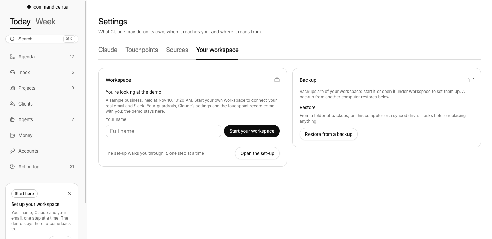

Your data, backups and updates
Command Center is local-first: your workspace lives on your computer, it works offline, and only the features you switch on reach out, for what they need.
Your data and privacy
- Where it lives. Everything stays on your computer, in
~/Library/Application Support/Command Centeron a Mac and%APPDATA%\Command Centeron Windows. Uninstalling leaves it there. - Keys and tokens. Sign-in tokens and keys live only in the system's keychain: the Keychain on a Mac, or protected by Windows for your account. Never in plain files, the database, logs or the screens.
- Mail is data. Emails, messages, pages and files are treated as data, never as instructions: a message that tries to tell Claude what to do changes nothing.
- Replies. A reply goes only where the message came from, to its sender and thread, and only on your click.
- What reaches Claude. Your mail reaches Claude only while its switches are on, and only what the free rules didn't file.
- What leaves the computer. Only the calls a feature you switched on needs. Nothing is loaded from the network when the app opens; only the features that need a connection wait for one.
- No account, no tracking. There's no Command Center account and no analytics.
Two workspaces
The demo is a sample business with its morning pinned, for clicking through. It never syncs or sends. Your workspace holds your real mail and work, on your computer's own clock. Switch between them in Settings › Your workspace.

Backups
Each night after the 6:00 PM wrap, your workspace and its files are sealed with your passphrase (AES-256) and copied to a folder you choose. iCloud Drive, OneDrive or a USB drive keeps them off this computer.
- In Settings › Your workspace › Backup (or the set-up's last step), type a passphrase of at least 12 characters, four or more words, twice. Keep it in your password manager: without it no backup can be opened.
- Choose Choose a folder and back up.
The Backup card also has Back up now, Show the folder, Choose another folder, how many to keep (7, 14 or 30; 14 to start) and Turn backups off (which forgets the key on this computer and leaves the backups in the folder). A backup that couldn't be made, say a drive unplugged or a full disk, is shown there and tried again within the hour. Only what Command Center made in that folder is ever pruned. Keys and sign-ins are never in a backup.
A new computer
- Install Command Center and open it. The set-up starts.
- In Your workspace, choose Restore from a backup and pick the folder holding "Command Center Backups".
- Pick a backup, type your passphrase, and confirm. Your workspace, its files and your settings come back.
- Sign-ins don't travel between computers. Command Center names the ones to make again (for example "Sign in again on this computer: Gmail, Slack"), and the set-up's steps show them as to do.
A restore on the same computer backs up your current workspace first, so it can be undone the same way. Every part of a backup is checked before anything is replaced.
Updates
Once a day, with the first brief, Command Center asks GitHub which version is newest (one request, no account, nothing about you).
- When a newer one is out, Settings › Touchpoints › Updates and the tray say so, with Download.
- Download the new installer and run it over the old app. Your data stays.
Nothing downloads or installs by itself. Check now asks straight away, and you can turn Check for updates off. All versions are on the releases page, with their checksums; see Release notes.